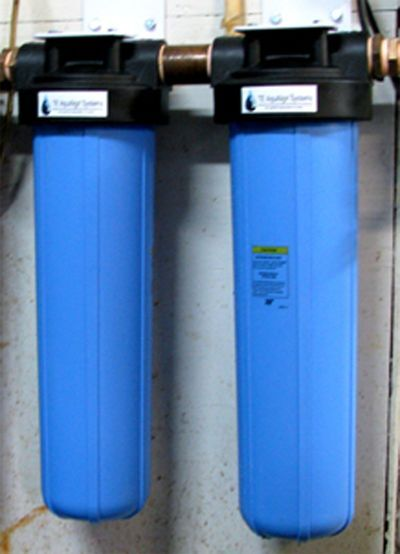

Producer data
42,000 laying hens drank less and held production longer
Burnbrae Farms ◆ name OK? · Woodstock, Ontario · March to June 2013 · ISA Brown layers
11.1%
less water per hen per day
0.0500 to 0.0444 gal
27%
slower weekly decline in production
6.0 to 4.38 cases/week
2.8%
above breed standard, up from 1.9%
+1.86 to +2.81 points
The farm installed AquAlign on the drinking water for a 42,000-bird house and compared eight weeks of its own records before and after.
Limits. Before and after on the same flock, with no separate control flock, so the hens were older after install. Cracked eggs rose slightly (2.15% to 2.55%), which the report attributes to flock age.